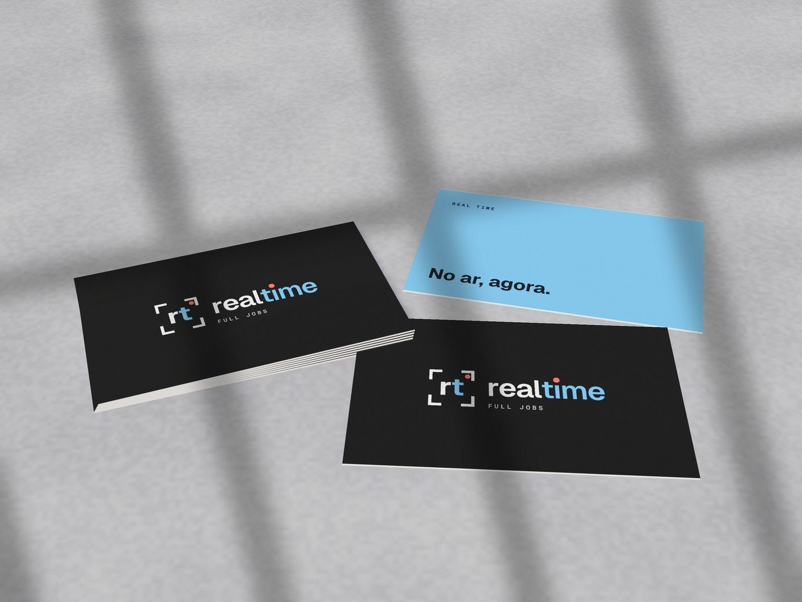
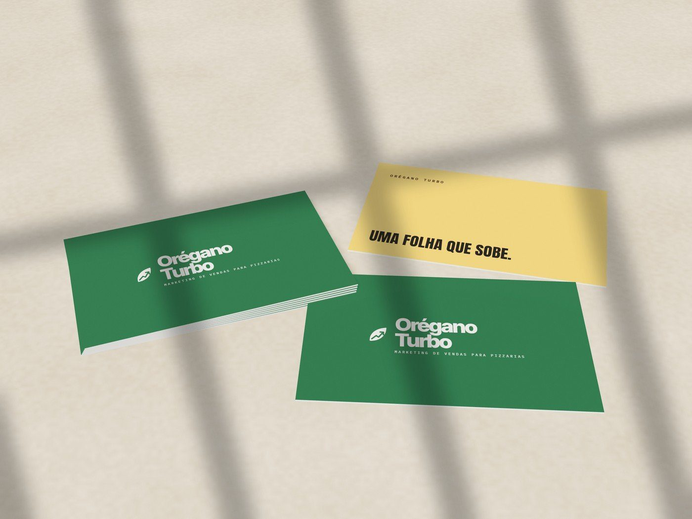
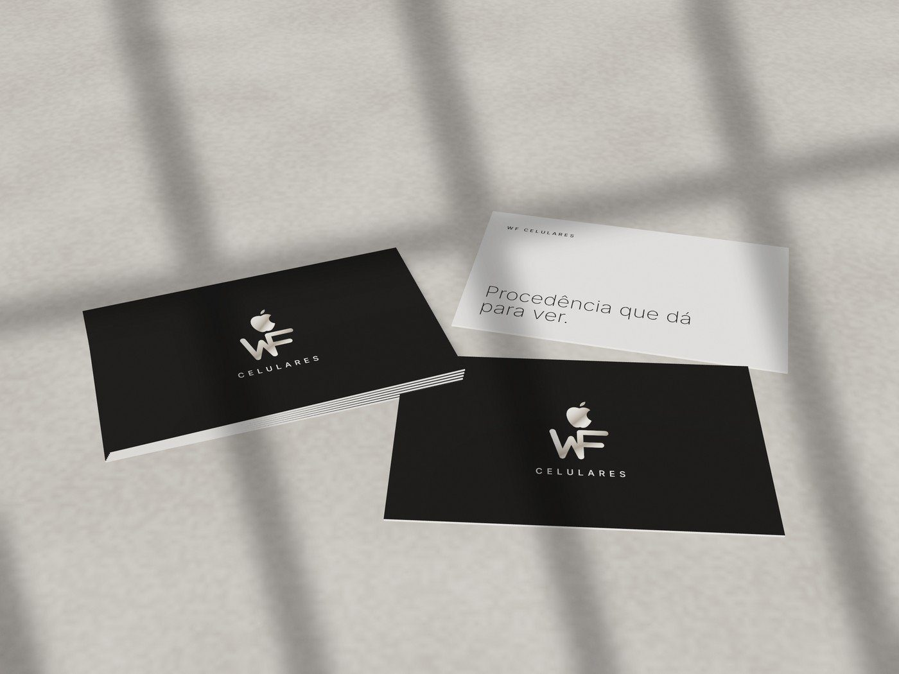
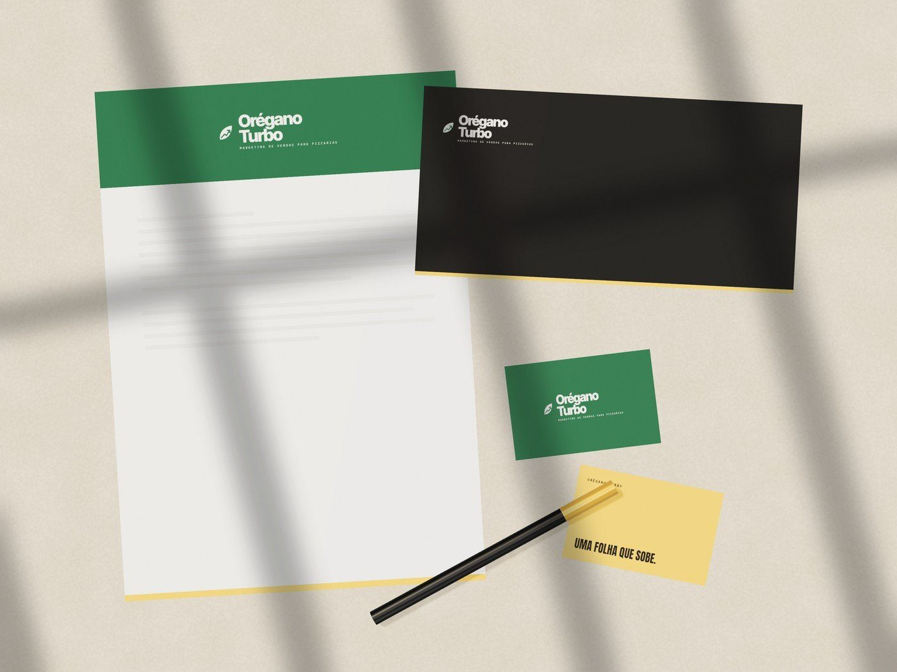
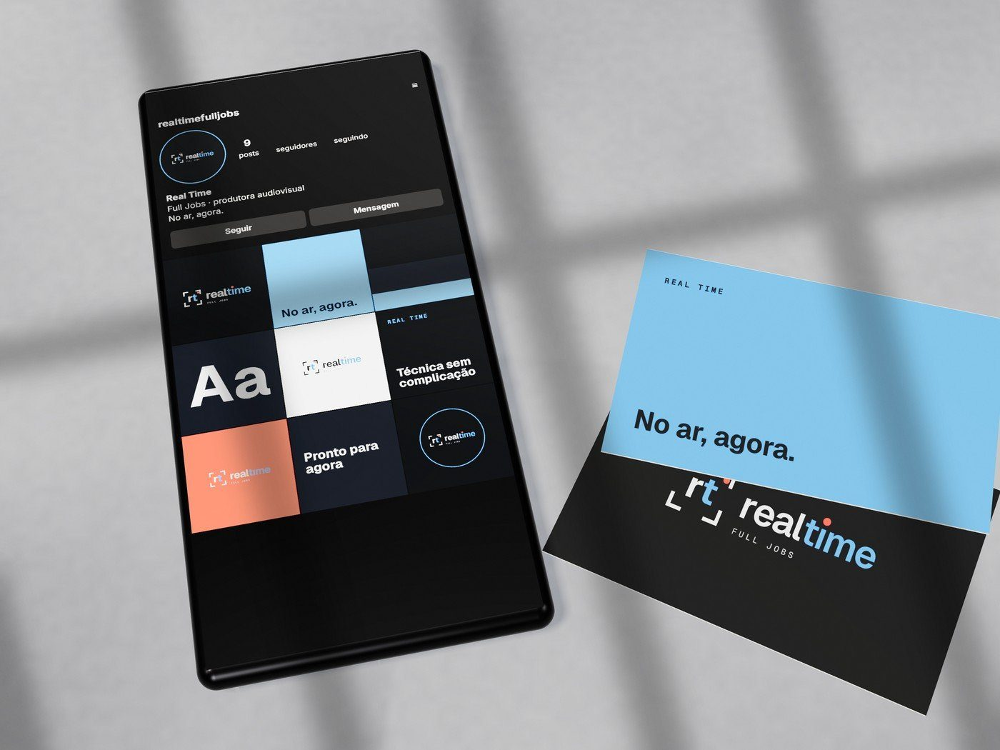
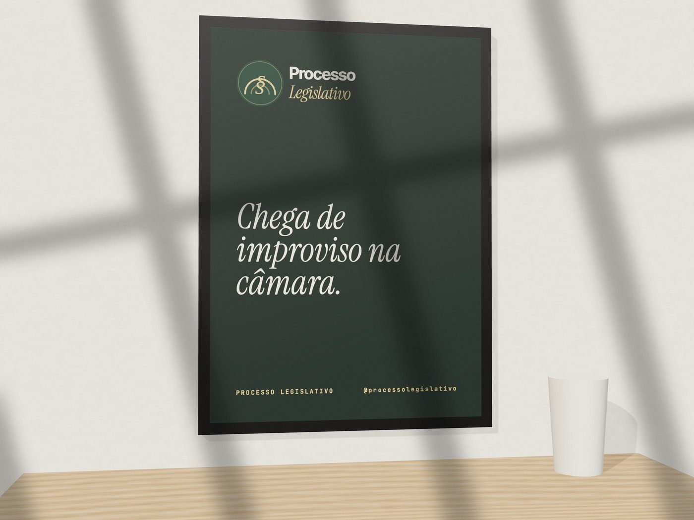

Marcas que já saíram daqui
6 cases reais





Logo, cores, letras e a marca aplicada no mundo real: cartão, Instagram, embalagem, fachada. Tudo pensado em quem compra de você.





Quando a marca tem sistema (cores com proporção, letras certas, regras simples), tudo o que você publica parece da mesma empresa. É isso que faz o cliente confiar antes de perguntar o preço.
Para quem está começando e precisa de uma marca profissional.
Para quem já vende e quer a mesma cara em tudo.
Para quem quer a marca inteira pronta para crescer.
